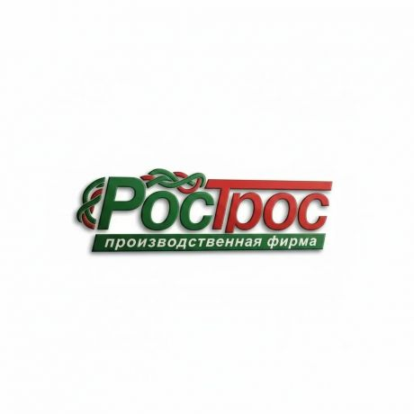

MITEX 2026 · Россия · Стенд 8B702
РосТрос
Карточка проверена 10 ноября 2026, 09:25 · Источник ↗ · Снимок оригинальной карточки ↗
О компании
Компания РосТрос - российский производитель товаров хозяйственного потребления: троса сантехнические, леска триммерная. Собственное производство полного цикла с мощностями свыше 3000 м2 позволяет нам контролировать процесс изготовления продукции на каждом этапе: от использования качественного сырья до соблюдения технологических процессов изготовления и упаковки готового товара, а так же предложить конкурентно способные цены на рынке напрямую от производителя. На нашем складе площадью более 1000 м2 всегда есть объем продукции в наличии, поэтому наши клиенты получают продукцию своевременно, даже в пик сезона. Изготавливаем товар под торговой маркой клиента. Доставка по Москве и Московской области, а также до транспортной компании бесплатно.
Контакты
Все контактные сведения из карточки
Контакты Адрес: 142500, Россия, Московская область, г. Павловский посад, ул. Маяковского, д. 126А Веб-сайт: https://ros-tros.ru E-mail: ros-tros@yandex.ru Телефон: +7(495)664-22-56
Все рубрики участника
Mitex - Рубрикатор
- 2. Садовая техника, инструмент, инвентарь, оборудование, расходные материалы и насосы
- 12. Крепеж, метизы, скобяные изделия
Зал
- Зал № 8
Участник выставки
- MITEX
- MITEX FASTENERS
Фотографии и изображения
Видео, каталоги и документы
В доступной карточке нет видео или документов. Смотрите сайт участника.